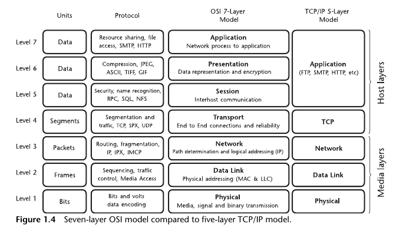
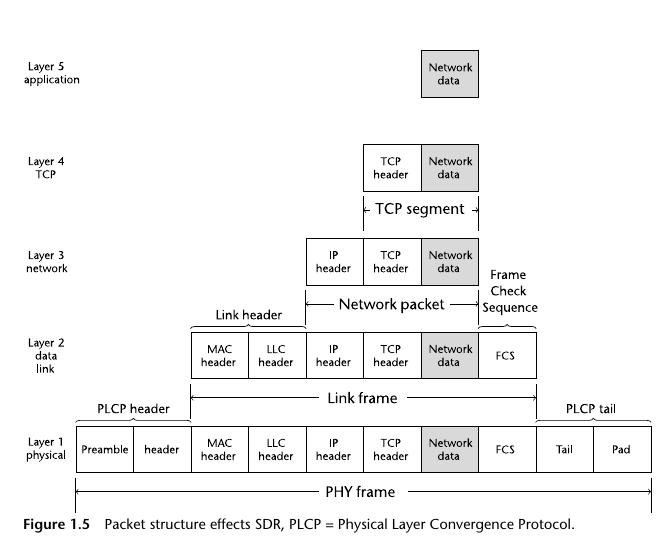
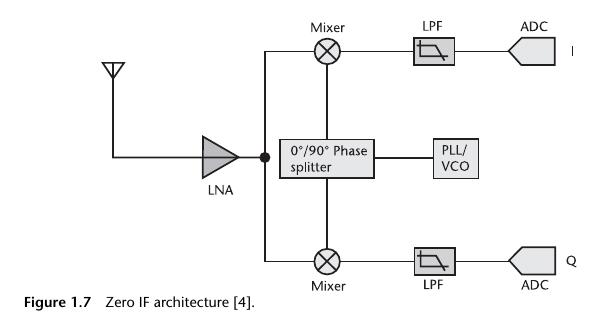

convert the binary information into unique
electromagnetic waveform properties such as amplitude, carrier frequency, and
phase
Networking Layers and Models
2 major models: OSI 7 layer protocol and TCP/IP 5 layer protocol

TCP/IP Layers (highest to lowest, levels 5 through 1)
Application Layer: Interfaces user with the data from the communication
system. For instance, the application layer would include data originating
from or intended for software running Web browsers, email clients, and
streaming media interfaces. These applications are usually addressed via
designated socket
Transport Layer: Responsible for transporting application layer messages
between the client application and server application. This layer ensures
reliable data transmission
Network Layer: Responsible for moving network layer packets from one
host to another host. Defines format of datagrams and how end systems and
routers act on datagram, as well as determine routes that datagrams take
between sources and destinations
Link Layer: Handles problem of exchanging data between two or more
directly connected devices. Reliability: This includes error detection and error
correction as well as addressing of different communication systems
Physical Layer: Sends individual bits from one communication system
directly to another communication system. It also covers the physical
interface between data transmission device and transmission medium.
Most of SDR application is in this layer
Example: 802.11 WiFi protocol:

Zero IF architecture (ZIF)
Uses a single frequency mixing stage with the local oscillator (LO)
set directly to the frequency band of interest, translating the received signal down
to baseband in phase (I) and quadrature (Q) signals
